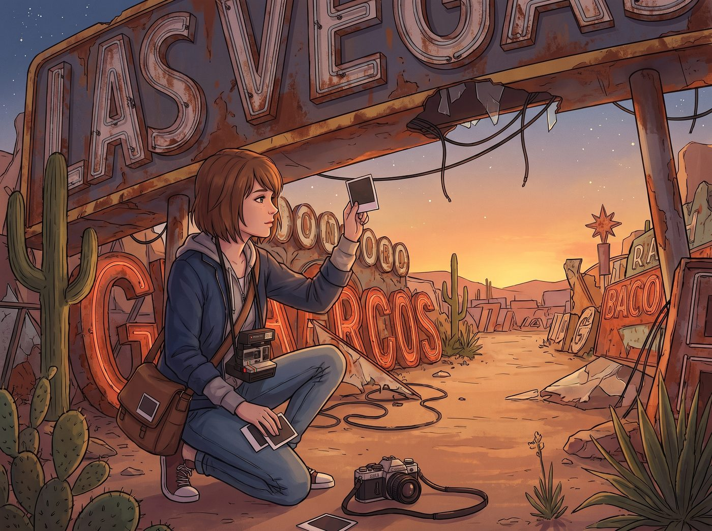
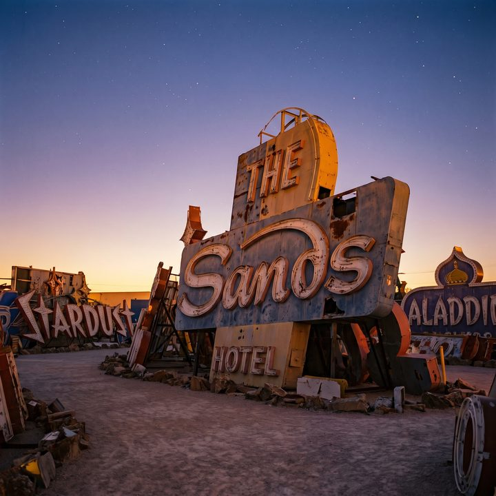
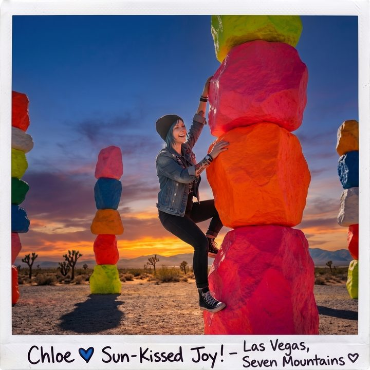
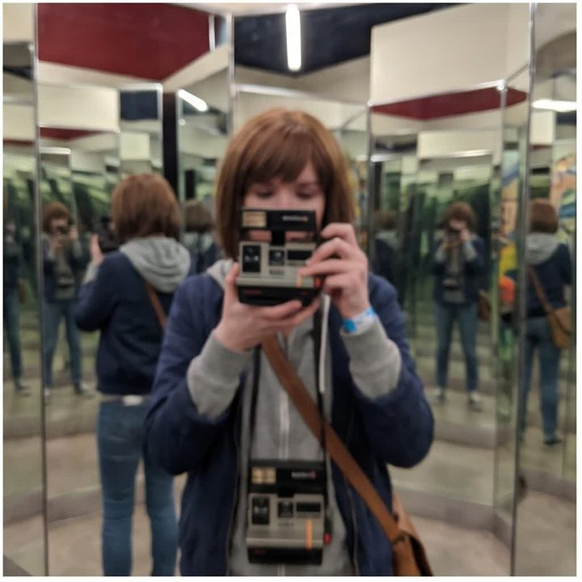

沙漠裡的藝術遊樂場




拉斯維加斯除了紙醉金迷的賭場和高熱量自助餐，其實隱藏著極其濃烈的、甚至帶點荒誕色彩的藝術氛圍。這座建立在沙漠海市蜃樓上的城市，對於 Max 這種「懷舊廢墟派」文青，以及 Victoria 這種「前衛高奢派」偽文青來說，簡直是一個巨大的靈感遊樂場。
當她們遠離了老虎機的喧囂，這趟旅程立刻演變成了一場底片與資本的藝術狂歡。
一、霓虹博物館：廢墟攝影與普普藝術的碰撞
這座被稱為「霓虹墓地」的戶外博物館，堆滿了拉斯維加斯過去幾十年退役、廢棄的巨大霓虹燈招牌。生鏽的金屬、破碎的燈管、褪色的復古字體，在沙漠的烈日和繁星下散發著迷人的衰敗感。
這裡簡直是 Max 的天堂。她掛著兩台寶麗來和一台底片單眼，像一隻掉進米缸的老鼠一樣在巨大的廢棄招牌間穿梭。對她來說，這些破碎的燈管就是時間的刻痕，每一張照片都充滿了往日榮光不再的強烈憂鬱與獨立電影感。她會為了等待一個完美的黃昏光線，在一塊 1960 年代的破招牌下蹲上兩個小時。
起初，Victoria 對這種「破銅爛鐵堆」嗤之以鼻。但當她得知這裡蘊含的美國普普藝術歷史後，立刻切換到了高階藝術贊助人的模式：「Caulfield，妳不懂，這些不是垃圾，這是波德萊爾式的現代廢墟美學。」Victoria 為了不跟普通遊客擠在一起，直接動用黑卡包下一個晚上的私人專場導覽，然後穿著高定風衣，在亮起的復古霓虹燈下，要求 Max 為她拍攝一組極具高級感的大片。
二、七魔山：荒漠中的超現實地景藝術
在拉斯維加斯郊外的茫茫荒漠中，瑞士藝術家堆疊了七座高達十幾公尺、塗著極其鮮豔螢光色的巨大石頭柱子。
站在這些鮮豔的巨石下，Victoria 戴著墨鏡，開啟了她的藝術評論家模式：「這是一種對自然與人造工業社會邊界的強烈叩問。螢光色象徵著拉斯維加斯的虛假繁華，而石頭則是永恆的自然。太妙了，這就是大地藝術的頂級表現。」她會逼著大家聽她講述十分鐘的當代藝術史，並試圖用專業術語來掩蓋她其實只是覺得這地方很適合拍照的事實。
Max 其實不在乎背後的學術理論。她被這種荒誕的對比感深深迷住了。灰黃色的沙漠與刺眼的螢光色石頭，產生了一種強烈的超現實主義錯覺。她會拍下 Chloe 靠在螢光粉色石頭上的畫面，那種龐克叛逆與荒誕藝術的結合，將成為她攝影集裡的絕對封面。
當 Chloe 試圖爬上那塊價值連城的藝術石頭拍照時，Lily 會在一旁溫柔地翻開筆記本：「Price 學姐，破壞聯邦土地上的公共藝術裝置，將面臨高額罰款及刑責。如果您執意攀爬，我將不得不提前聯絡保釋官。」Chloe 只能罵罵咧咧地退下來。
一旁的 Kate 見狀，眼神一亮，雙手交握，正準備像往常一樣走上前去溫柔地誇獎 Lily 幾句——這幾乎已經是這個車廂裡的固定戲碼了。
沒想到 Chloe 搶先一步，反倒自己咧嘴轉向 Lily，語氣裡帶著一絲心服口服的痞氣：「行吧，Lily，算妳厲害，攔得比老娘的良心還快。要不是妳，老娘現在大概已經在保釋官的名單上留名了。」
Kate 才張開嘴，話還沒說出口，就這樣被 Chloe 搶了先，只能愣愣地眨了眨眼，隨即被逗得掩嘴輕笑：「Chloe 今天搶答得真快呢。」
「老娘只是提前預判了妳要說什麼，」Chloe 得意地聳聳肩，「與其等妳慢悠悠地誇一輪，不如老娘自己先認栽算了。」
三、Omega Mart：平行宇宙的沉浸體驗
這是一個披著詭異大型超市外皮的超現實主義沉浸式藝術展。貨架上擺滿了古怪的虛構商品，而推開超市的冰櫃門或員工通道，就會進入一個龐大、扭曲、充滿螢光和異星植物的異世界迷宮。
作為一個真正經歷過平行宇宙和時空扭曲的人，Max 走進這裡就像回到了快樂老家。她會被那些充滿獨立精神的怪異塗鴉和隱藏劇情徹底吸引，忘記時間的流逝。她會在一間佈滿扭曲鏡子的房間裡，拍下無數張充滿迷幻色彩的自拍。
Victoria 一開始會雙臂交叉，對這種「過度商業化的遊樂園式藝術」表示強烈譴責，認為這不過是資本用來收割年輕人的網紅打卡點。但不到二十分鐘，她那強烈的好勝心和對複雜敘事的渴望就會被點燃。她會開始瘋狂收集超市裡的每一份隱藏文件，試圖解開整個展覽背後龐大的世界觀謎團。最後，她會在禮品店裡一邊罵著「這簡直是媚俗的消費主義」，一邊刷卡買下最貴的全套限量版周邊怪異商品。
在這座罪惡之城，沒有了時間倒流的生死壓力，Max 和 Victoria 終於可以盡情釋放她們對視覺和藝術的偏執。而對於二號車廂的小分隊來說，看著時空領主和財團名媛為了一塊廢棄的霓虹燈牌或者一家詭異的假超市而興奮得像個孩子，這本身就是這趟放風之旅中最完美的風景。